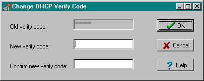

This version of the Broker supports single signon. For more information regarding single signon, please refer to the description in Kernel Patch #59 (i.e., XU*8*59).
Security
Topics
Security in distributed computing environments, such as in client/server systems, is much more complicated than in traditional configurations. Although it is probably impossible to protect any computer system against the most determined and sophisticated intruder, the RPC Broker implements robust security that is transparent to the end user and without additional impact on IRM.
Security with the RPC Broker is a four-part process:
Validation of Connection Request
An enhancement to security has been included with this version of the Broker. Before the Broker Listener jobs off a Handler for a client, it checks the format of the incoming connection request. If the incoming message does not conform to the Broker standard, the connection is closed. This serves as an early detection of impostors and intruders.
The GUI signon application is integrated with the RPC Broker interface. This GUI signon is invoked when the client application connects to the server. The signon application automatically prompts users for their Access and Verify codes if they are not already signed on to a VISTA application.
A sample of the GUI signon window integrated with the RPC Broker is illustrated below:
|
This version of the Broker supports single signon. For more information regarding single signon, please refer to the description in Kernel Patch #59 (i.e., XU*8*59). |
Client/server applications are a "B" (i.e., Broker) type of option in the OPTION file (#19). Users must have the client/server application option assigned to them like any other assigned option in VISTA. It can be put on their primary menu tree or as a secondary option/menu as part of their suite of permitted options. The client/server application will only run for those users who are allowed to activate it.
|
The client/server application options will not be displayed in a user's menu tree. |
Kernel's Menu Manager verifies that users are allowed access to a VISTA application or option with the following process:
|
For more information on Access and Verify codes or the Kernel signon process in general, please refer to the Kernel Systems Manual. |
Users Can Customize Signon Window
When a VISTA program on the client connects to the server, the VISTA signon window is displayed for the user to identify and authenticate himself on the server. This window's System menu (i.e., see the upper left corner of the Signon window dialog box) has a "Properties..." item:
When this item is selected, the user is presented with the following configuration dialogue box:
Using the Sign-on Properties dialog box, users can control the appearance of the signon window by modifying the following characteristics:
The window position can be one of the following:
|
Center (default) |
The window will always appear in the center of the screen. |
|
Current |
The current position of the window will be saved and used in the future. |
|
Remember |
Each time the window is used and closed, it will record its position and open in that same place the next time it is used. |
The window size can be one of the following:
|
Normal (default) |
The size of the window as it was designed. Typically, this is 500 pixels wide by 300 pixels high. |
|
Current |
The current size of the window will be saved and used in the future. |
|
Remember |
Each time the window is used and closed, it will record its size and open with the same size the next time it is used. |
The introductory text has a couple of settings users can control:
Background Color:
|
Cream (default) |
According to the VA GUI conventions, this is the background color that should be used with text that users cannot edit. |
|
White |
For clarity and brightness. |
Font:
When users press the "Change Font" button they are presented with a Font form that can be used to change the font face, style, size, and color of the introductory text of the signon window.
Change VISTA Verify Code Component
This version of the Broker includes a new Change VISTA Verify Code dialog for the client workstation. After a user signs onto the server, if their Verify code has expired, the user is automatically prompted with the following message: "You must change your Verify code at this time." Once the user presses the OK button they are presented with the Change VISTA Verify Code window as displayed below:

|
The old Verify code will appears as asterisks (*) in a grayed-out box. |
Users must then do the following:
In the future, users will be able to invoke this dialog whenever they choose to modify their Verify code. For now, users who wish to change their Verify code prior to expiration may do so via the Edit User Characteristics option in the roll-and-scroll environment.
The RPC Broker security allows any RPC to run when it is properly registered to the VISTA client/server application. The Broker on the server along with the Kernel's Menu Manager determines which application a user is currently running. Menu Manager determines if a user is allowed to run this application or option by the following process:
The application being run is designated by a "B"-type option in the OPTION file (#19). The application must specify the option and that option must be in a user's menu tree.
|
For more information on registering an RPC to a package, see the topic entitled "RPC Security: How to Register An RPC" in the RPC Broker V. 1.1 Getting Started with the Broker Development Kit manual. |
The security steps each client user will follow and the intermediate client/server security processes are described in the following example:
|
Step |
Description |
|
1. |
The user starts a VISTA program on the client. For this example, the user clicks on the Patient Care Management Module (PCMM) application icon. |
|
2. |
The user must sign on to the server through the GUI signon window on the client using their Access and Verify codes invoking the Kernel signon process. |
|
3. |
The Menu Manager on the server verifies the user is allowed access to the "B"-type option requested by PCMM. |
|
4. |
The Menu Manager on the server verifies the option is a "client/server" type option and the requested RPC is in that option's RPC multiple. |
|
5. |
If all of the previous steps complete successfully, the application RPC is launched. |
Security Features Tasks Summary
The following table summarizes the security tasks that are required and which module completes them:
|
Security Task |
Completed By |
|
RPC Broker | |
|
Kernel Signon | |
|
Verify user is authorized to run this package |
RPC Broker & Menu Manager |
|
RPC Broker & Menu Manager | |
|
Application - RPC Registration |
|
To reiterate, an RPC is only allowed to run within the context of an application with which it is registered. Users are only able to run the server side of the application that was installed on the server by IRM. |
|
For each release of the RPC Broker, the RPC Broker Development Team will continuously strive to implement the most complete, robust, and flexible security available at the time. |